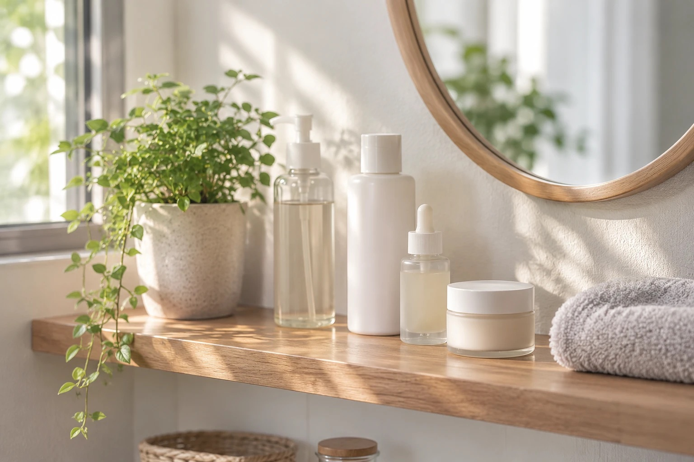

「新作が出るたびに気になって、また買っちゃった」
友達にそう話したら、「それ、去年も同じこと言ってなかった？」と笑われました。言われてみれば、たしかにそうだったのです。振り返れば、かれこれ3年近く、同じことを繰り返していました。
スキンケア迷子だった日々を振り返って
気づけば、洗面台が試供品だらけになっていました
SNSで話題のメンズ美容液、雑誌で紹介されていた韓国発のスキンケアブランド、友人がおすすめしてくれた導入化粧水。良さそうなものを見つけるたびに試して、気に入らなければまた次を探す。その繰り返しで、洗面台の棚には使いかけのボトルが常に10本近く並んでいました。
「もっと自分の肌に合うものがあるはず」。そう思って探し続けているつもりでしたが、今思えば、ただ新しいものに飛びついていただけだったのかもしれません。季節が変わるたびに、洗面台の引き出しの中身がまるごと入れ替わるような状態でした。効果を感じる前に次のものが気になって、結局どれも半分も使い切らないまま増えていく。そんな暮らしが、もう何年も続いていました。
「なんとなく」で選ぶことに疲れていました
正直なところ、スキンケア選びに疲れていました。新商品の情報を追いかけるのは楽しいはずでした。それなのに、いつからか「これを買わないと乗り遅れる」というような、義務感に近い気持ちになっていたのです。ふと家計簿をつけてみたら、スキンケアだけで月に1万円以上使っていた月もあり、自分でも驚きました。
友達に指摘されたその日、久しぶりに洗面台をちゃんと片付けてみました。半分も使っていない化粧水が5本、開封すらしていない美容液が3本、サンプルのパウチが数えきれないほど。それを見て、さすがに自分でもおかしいと思いました。「これだけあるのに、私は自分の肌に何が合うのか、結局分かっていない」。そう気づいた瞬間でした。
「これでいい」と思えるようになるまで
それから、新しいものを探すのをいったんやめてみることにしました。今持っているものの中から、使い切っていないものを順番に、最低でも1本使い切るまでは次に手を出さないと決めて。派手な効果はなくても、肌の調子が明らかに悪くなるものもありません。3週間ほど続けたころ、「これで十分だったんだ」と、拍子抜けするくらい普通に感じました。
新商品の情報が目に入っても、「今使っているものを使い切ってから」と、一度立ち止まる癖がつきました。それだけで、気持ちがずいぶん楽になりました。合わないものを探して彷徨っていたのではなく、単に立ち止まる勇気がなかっただけなのだと思います。
今は、これでいい
今も特別なスキンケアをしているわけではありません。ただ、新しいものに手を伸ばす前に、「今のままで困っていることは何か」を一度考えるようになりました。困っていなければ、それでいい。それだけのことに、3年近く遠回りをして辿り着いた気がします。
「それ、去年も同じこと言ってなかった？」と言われることは、もうなくなりました。洗面台の棚には、今も同じ3本が並んでいます。
この記事について
美容・コスメジャンルにおける、一人称の体験談エッセイの執筆サンプルです。共感を軸にした構成・語り口で執筆しています。
同じ流れで、ご依頼のジャンル・トンマナに合わせた体験談記事を執筆します。
執筆のご相談はこちら